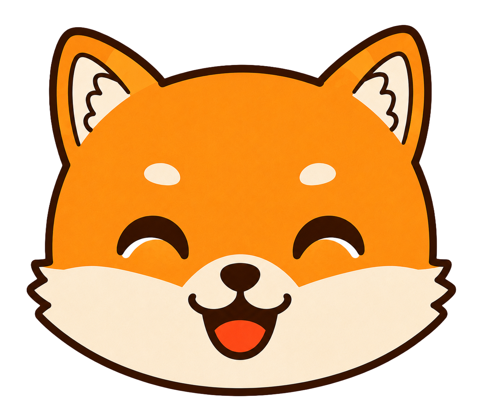

ATTENTION
ここに書いたことは、AIが投稿を作るとき毎回かならず読みます
だから、書けば書くほどよいわけではありません。いつ見ても変わらないことだけを書いてください。
セール期間のように変わることは書かないのがコツです（古い情報のまま投稿されてしまいます）。
セール期間のように変わることは書かないのがコツです（古い情報のまま投稿されてしまいます）。
もとになる資料
4 / 10件
ホームページ 1件・PDF 3件／最後に読み込んだのは 2026年8月10日
資料を読み込んでいます0%
https://inucafe-one.example.com
ホームページ・8月10日に読み込み
メニュー表_2026秋冬.pdf
PDF・620 KB・8月10日に読み込み
店舗案内リーフレット.pdf
PDF・1.8 MB・8月10日に読み込み
ブランドガイドライン_2026.pdf
PDF・4.2 MB・8月10日に読み込み
最後に読み込んだのは 2026年8月10日。資料は ドライブの「資料・リンク」 にも入っています。
AIに教えた情報
3/ 4項目
概要
犬カフェOne は、看板犬のポチと過ごせる犬同伴OKのカフェです。手作りのパフェとコーヒーが人気で、駅から歩いて5分。テラス席10席をふくむ全28席。犬を飼っていない方も入れます。
AIが資料から作りました主な特徴
- 犬と一緒に入れる：中型犬までOK。カートやキャリーは不要。
- 看板犬のポチ：柴犬。10:00〜15:00 は店内にいます。
- 手作りパフェ：季節ごとに中身が変わります。週末は限定パフェあり。
- テラス席：10席。予約は無料で受けています。
- 駅から徒歩5分：駐車場は近くのコインパーキングをご案内。
料金
- コーヒー：550円（税込）
- パフェ：890円〜1,200円（税込・季節で変わる）
- 犬用おやつ：330円（税込）
- テラス席の予約：無料
お客様
まだ書いていません
決めたこと
0/ 4項目
SNSで増やしたいもの
まだ決めていません
お客様の悩み・したいこと
まだ書いていません
いちばん推すこと
まだ書いていません
他店との決定的な違い
まだ書いていません
いまの情報だと、AIはこんな投稿を書きます
中身を直すと、書きぶりも変わります。試しに書かせただけなので、投稿はされません。
今日も看板犬のポチが店内でお待ちしていますよ🐕
手作りパフェは季節ごとに中身が変わります。今週は秋の新作が登場しました（890円・税込）。
テラス席は10席、予約は無料で受けていますので、わんちゃんとご一緒にどうぞ。
#犬カフェ #犬同伴OK #柴犬
手作りパフェは季節ごとに中身が変わります。今週は秋の新作が登場しました（890円・税込）。
テラス席は10席、予約は無料で受けていますので、わんちゃんとご一緒にどうぞ。
#犬カフェ #犬同伴OK #柴犬
連携中のSNS
Instagram
@inucafe_one・2026/06/12 に連携
X
@inucafe_one・2026/06/12 に連携
TikTok
@inucafe_one・2026/07/03 に連携
YouTube
投稿の出し先に追加できます
ATTENTION
連携できるSNSを増やすと、同じ投稿をまとめて出せます。プランの変更は左下のアカウントメニュー →「プラン・支払い」から。
言葉づかい
- 言葉づかい：やさしい（「〜ですよ」「〜してみてくださいね」）
- 使ってほしくない言葉：激安 / 最安値 / 絶対
- 言いかえ：「犬」ではなく「わんちゃん」と書く
推奨ワード
- わんちゃん / 看板犬 / 手作り / テラス席
具体ルール
- 絵文字は1投稿に3つまで。犬の絵文字は必ず入れる
- ハッシュタグは5つまで。#犬同伴OK は毎回入れる
- 価格を書くときは必ず「税込」を付ける
投稿言語
- 日本語
撮影レベル
- 簡単：スマホで撮って編集できる範囲で提案します
Instagram の出し方
Facebookページにも同時に出す
いつも出す時間
1週間に出す本数の目標
目標3本
今週の出した数0本
あと3本
このまま続けたときの見通し
1週間に出す本数
3本
1年後のフォロワー
560人
1年間の表示回数
48,000回

わんちゃんと過ごす時間を見せる、コミュニティ型のアカウント
開設して10ヶ月。店内・テラス席・看板犬の日常が中心です。写真つきの投稿が多く、平日の昼に出しています。
いまの状態
いい調子で回っています
目標は週1本。直近8週のうち6週で出せています。
今週
86件
出した投稿
1,240人
フォロワー
月4件
いまのペース
3.2%
反応された割合
よく出しているもの
わんちゃんの日常32%28件
テラス席・店内24%21件
手作りメニュー18%15件
お知らせ・キャンペーン14%12件
その他12%10件
投稿のかたち
62%
写真
22%
動画
16%
文字だけ
一緒に運用する人を招いて、できることを決めます。変更は押したときにすぐ反映されます。
投稿を出す前に、承認をもらう
オンにすると、作成者が書いた投稿は承認者が「承認」するまで出ません。
ひとりで運用しているときはオフのままで大丈夫です。
ひとりで運用しているときはオフのままで大丈夫です。
メンバー
4人
田
いま
田中 陽菜（自分）
hina@inucafe-one.example.com
佐
3時間前
佐藤 正太郎
sato@inucafe-one.example.com
奥
昨日
奥澤 汐莉
okuzawa@inucafe-one.example.com
岩
—
岩上 陽菜
iwagami@inucafe-one.example.com・招待中（まだ参加していません）
オーナー
すべてできます。メンバーの追加・削除と、支払いの変更もできます。
承認者
投稿を作れて、ほかの人の投稿を承認できます。メンバーは変えられません。
作成者
投稿を作って、承認をお願いできます。自分では承認できません。
投稿を出す前に、AIが中身を見て気になるところを教えます。直すかどうかは自分で決められます。
ここでの変更は押したときにすぐ反映されます（保存は要りません）。
ここでの変更は押したときにすぐ反映されます（保存は要りません）。
投稿を出す前に、AIに見てもらう
オフにすると、投稿画面の「AIレビュー」は出なくなります。
見てもらうこと
「必ず直す」にすると、直すまで投稿を出せません。「教えてもらうだけ」は指摘だけで、出すのは止めません。
誤字・脱字
打ち間違い、変換ミス。
日付・値段・営業時間
数字が本文とちがっていないか。
言ってはいけない表現
「絶対に治る」など、法律で問題になりやすい言い切り。
言い回しの分かりやすさ
長すぎる一文、むずかしい言葉。
言葉づかいが決めたものと合っているか
「SNS設定」で決めた言葉づかいとズレていないか。
ハッシュタグ
足したほうがよいタグの提案。
次にしてほしいこと（CTA）
「プロフから予約」などの案内があるか。
自分たちのチェック観点
お店で決めているルールを足せます。ここに書いたことも一緒に見てもらえます。
お客様の顔が写った写真は使わない
「わんちゃん」と書く（「犬」とは書かない）